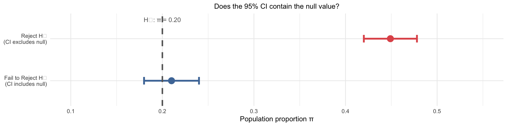
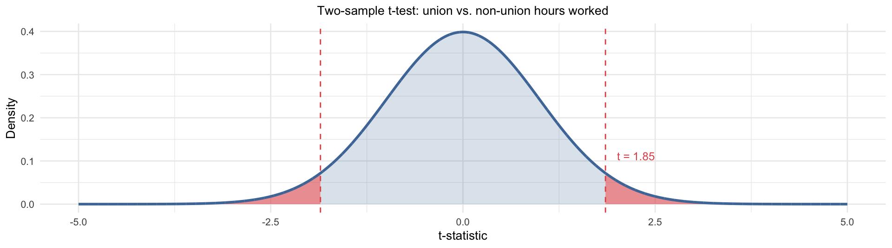
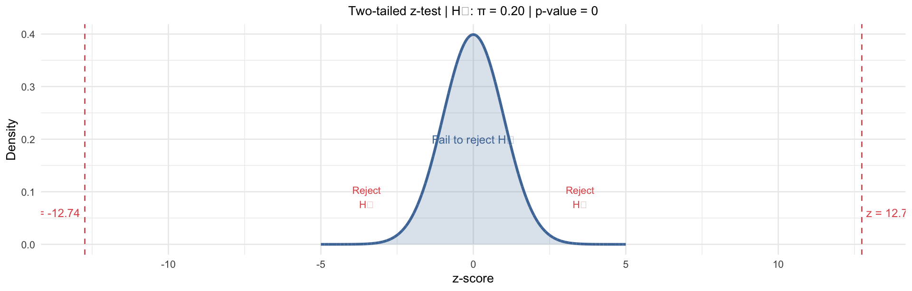

[1] 0.01063538Week 9
Sociology 106: Quantitative Sociological Methods
March 17, 2026
Agenda
Housekeeping:
- Annotated bibliography & Spring Recess
Statistical content — three parts:
- Part 1: Hypothesis testing — the logic
- Part 2: t-tests for means and group differences (+ proportion z-test)
- Part 3: Chi-squared test — associations between two categorical variables
In-class lab:
- Applying hypothesis tests to your research data
Housekeeping
Annotated Bibliography
- Due Thursday, March 19
- Happy to answer last-minute questions after class!
- Example on bCourses under the Research Paper folder
Weekly Assignment #8
- Due Thursday, April 2 (after Spring Recess)
- Involves applying today’s hypothesis testing tools to your research dataset
Spring Recess
- March 24 — enjoy the break!
- Use that time to relax and work on you paper proposal with outline due on 4/16
Where We Are in the Course
- Week 7: sampling distributions and the Central Limit Theorem
- Week 8: confidence intervals — estimating population parameters from samples
- This week (Week 9): hypothesis testing + chi-squared tests for associations
- Weeks 10–13: regression analysis (OLS and logistic)
Main idea: Last week we built confidence intervals — a range of plausible values for a parameter. Today we flip the question: given a specific claim about the population, how likely are our sample results if that claim were true?
The chain of inference so far:
Week 7: Population → Sample → Statistic → Sampling distribution
Week 8: Sample → Statistic → Confidence interval → Inference
Week 9: Null hypothesis + Sample statistic → Test statistic → p-value → Decision
Last Week: Recap
| Concept | Key idea | Example |
|---|---|---|
| Point estimate | Best single guess for population parameter | \(\hat{p} = 0.449\) (GSS env. support) |
| Standard error | How uncertain is the estimate? | \(SE(\hat{p}) = 0.015\) |
| Confidence interval | Range likely to contain the true parameter | 95% CI: [0.420, 0.478] |
| z vs t | Proportions → z; Means → t | \(z^* = 1.96\); \(t^* = 2.447\) (\(df = 6\)) |
Connection to today:
Last week we estimated unknown population parameters and surrounded them with intervals. Today we start from a specific claim about the population — and ask whether our data are consistent with it.
Questions?
Part 1: Hypothesis Testing
Can we rule out chance as an explanation?
What Is a Hypothesis Test?
A hypothesis test is a formal statistical procedure for evaluating whether a finding is likely due to chance.
The core steps:
- State a null hypothesis (\(H_0\)): “there is no real effect” — the finding is just chance
- Compute a test statistic: how far is our sample result from what \(H_0\) would predict?
- Calculate a p-value: if \(H_0\) is true, how likely is a result this extreme?
- Decide: if the p-value is small enough, reject \(H_0\)
The core logic:
We don’t prove the null hypothesis wrong — we ask: if it were true, how surprising would our data be? If very surprising, we have grounds to doubt the null.
A Motivating Example: James Bond
James Bond claims he can tell whether a martini is shaken or stirred just by tasting it.
The experiment: Give him 16 randomly prepared martinis. He correctly identifies 13 out of 16.
Null hypothesis (\(H_0\)): He’s just guessing — each trial is a 50-50 coin flip (\(\pi = 0.5\))
Alternative hypothesis (\(H_1\)): He can genuinely tell the difference — he performs better than random guessing (\(\pi > 0.5\))
The question: If he were just guessing, how likely is it that he’d get 13 or more right out of 16?
Probability ≈ 1.1% — very unlikely if he were just guessing. We have strong evidence he can actually tell the difference.
P-values
A p-value is the probability of observing a test statistic as extreme as (or more extreme than) the one we got, assuming the null hypothesis is true
- James Bond: \(p = 0.011\) — if guessing randomly, only 1.1% chance of ≥ 13/16 correct
Critical misconception:
The p-value is NOT the probability that \(H_0\) is true. The null hypothesis is either true or false — it doesn’t have a probability.
What it IS: The p-value is P(data this extreme | \(H_0\) true) — the probability of observing results at least this extreme, assuming the null holds. It answers: “if the null were true, how often would we see data like ours?” — not “how likely is the null to be true?”
| p-value | Interpretation |
|---|---|
| Very small (e.g., 0.001) | Data would be very surprising under \(H_0\) → strong evidence against \(H_0\) |
| Small (e.g., 0.03) | Data somewhat unlikely under \(H_0\) → moderate evidence against \(H_0\) |
| Large (e.g., 0.40) | Data consistent with \(H_0\) → no reason to doubt \(H_0\) |
- ❌ The probability that \(H_0\) is true
- ❌ The probability that we made an error
- ❌ How large or important the effect is
- ❌ Whether the finding matters in practice
Statistical ≠ substantive significance:
A result can be statistically significant (\(p < 0.05\)) but substantively trivial — the effect is real but tiny. With large samples, even meaningless effects can reach significance. Always report the size of the effect, not just whether it is significant.
Significance Levels
How small does the p-value need to be before we reject \(H_0\)?
We set a significance level \(\alpha\) in advance — the threshold below which we’ll reject:
- Most common: \(\alpha = 0.05\) — we use this in this class
- Also used: \(\alpha = 0.01\), \(\alpha = 0.10\)
Decision rule:
| Result | Decision |
|---|---|
| \(p < \alpha\) | Reject \(H_0\) — accept \(H_1\); say the result is “statistically significant” |
| \(p \geq \alpha\) | Fail to reject \(H_0\) — we do not “accept” \(H_0\), we just lack evidence to reject it |
Why “fail to reject” — not “accept”?
A negative result doesn’t prove the null is true. A small sample may simply be too underpowered to detect a real effect. We might be failing to reject because the effect doesn’t exist — or because we didn’t have enough data to see it.
The Danger of Weak Tests: An Illustration
Suppose a coin has a true probability of heads \(\pi = 0.51\). We flip it 50 times and get 24 heads.
Test \(H_0: \pi = 0.50\) with a two-tailed test:
\(p \approx 0.89\) — we fail to reject the null.
But we know \(H_0\) is false — the true value is \(\pi = 0.51\), not \(0.50\)!
The lesson:
Failing to reject \(H_0\) does not mean \(H_0\) is true. The test just didn’t have enough statistical power to detect a very small effect. This is why we say “fail to reject” — not “accept.”
One- and Two-Tailed Tests
A one-tailed test checks for a significant effect in one specific direction
- \(H_0: \pi \leq 0.50\) vs. \(H_1: \pi > 0.50\)
- All of \(\alpha\) is in one tail — easier to reject, but only in the predicted direction
James Bond (one-tailed): Did he perform better than random guessing?
A two-tailed test checks for a significant effect in either direction
- \(H_0: \pi = 0.50\) vs. \(H_1: \pi \neq 0.50\)
- \(\alpha\) is split equally — 2.5% in each tail; more conservative and more common in social science
James Bond (two-tailed): Did he perform differently from random guessing?

- One-tailed: rejection region entirely on one side
- Two-tailed: rejection region split — requires a more extreme result to reject
| Scenario | Recommended |
|---|---|
| Theory strongly predicts the direction | One-tailed (use sparingly!) |
| No strong directional prediction | Two-tailed (default) |
| Exploratory research | Two-tailed |
Default to two-tailed:
Unless you have a strong, pre-specified theoretical reason to predict direction, use a two-tailed test. Effects in the “unexpected” direction are often theoretically important!
CIs and Hypothesis Tests Are Connected
Last week’s confidence intervals and today’s hypothesis tests are two sides of the same coin:
- If the 95% CI does not contain the null value \(\mu_0\) → reject \(H_0\) at \(\alpha = 0.05\)
- If the 95% CI contains the null value → fail to reject \(H_0\)

The equivalence:
The 95% CI is precisely the set of null values you would fail to reject at \(\alpha = 0.05\). Testing and estimation are equivalent — they just frame the same question differently.
Questions?
Part 2: t-Tests for Means and Group Differences
Testing associations involving a continuous outcome variable
Three Common Tests
| Test | When to use | Key statistic | Distribution |
|---|---|---|---|
| One-sample t-test | Continuous variable; test if \(\bar{x} = \mu\) | t-score | t (\(df = n-1\)) |
| Two-sample t-test | Compare means of two groups | t-score | t (\(df \approx n_1+n_2-2\)) |
| Proportion test | Binary variable; test if \(\hat{p} = P\) | z-score | Normal |
All three tests follow the same steps:
- state \(H_0\)
- compute a test statistic measuring how far the sample result is from \(H_0\)
- find the p-value under the null distribution
- decide
Writing Up Results: Best Practices
Every hypothesis test write-up should include:
- The sample statistic (mean, proportion, or difference) — not just the p-value
- The test statistic and p-value
- Whether you reject or fail to reject \(H_0\), at \(\alpha = 0.05\)
- A plain-language interpretation connecting the result to your research question
One-tailed test caveat: If you use a one-tailed test (e.g., \(H_1: \mu < 40\)) but the sample result goes in the opposite direction, you still fail to reject \(H_0\).
Confidence intervals: A 95% CI alongside your test tells the reader the range of plausible values — pair this with the test whenever you can.
Test 1: One-Sample t-Test for a Mean
General form of the one-sample t-test:
\[H_0: \mu = \mu_0 \qquad \text{(sample mean equals a specified population value)}\]
\(H_1\) depends on whether the research hypothesis predicts a direction:
| Alternative | Test type | When to use |
|---|---|---|
| \(H_1: \mu \neq \mu_0\) | Two-tailed | No predicted direction — default choice |
| \(H_1: \mu > \mu_0\) | One-tailed (upper) | Theory predicts sample is higher than \(\mu_0\) |
| \(H_1: \mu < \mu_0\) | One-tailed (lower) | Theory predicts sample is lower than \(\mu_0\) |
Running example: Is the mean hours worked per week by U.S. adults equal to 40 hours?
- \(H_0: \mu = 40\) — the population mean is 40 hours
- \(H_1: \mu \neq 40\) — the population mean is something other than 40 (two-tailed)
- Significance level: \(\alpha = 0.05\)
Under \(H_0\), the test statistic follows a t-distribution with \(df = n - 1\):
\[t = \frac{\bar{x} - \mu_0}{s / \sqrt{n}}\]
| Step | What to compute | Formula/Rule |
|---|---|---|
| 1 | State \(H_0\) and \(H_1\) | \(H_0: \mu = \mu_0\); choose \(H_1\) based on theory |
| 2 | One- or two-tailed? | Does theory predict a direction? → one-tailed; otherwise → two-tailed (default) |
| 3 | Sample mean & SE | \(\bar{x}\); \(SE = s / \sqrt{n}\) |
| 4 | t-statistic | \(t = (\bar{x} - \mu_0) / SE\) |
| 5 | p-value | See below |
Step 2 determines the p-value formula:
- Two-tailed (\(H_1: \mu \neq \mu_0\)):
2 * pt(-abs(t), df = n - 1) - One-tailed upper (\(H_1: \mu > \mu_0\)):
1 - pt(t, df = n - 1) - One-tailed lower (\(H_1: \mu < \mu_0\)):
pt(t, df = n - 1)
mu = 40 sets the null hypothesis value — R tests whether the true population mean equals 40.
One Sample t-test
data: hrs_clean$hrs1
t = 5.0511, df = 1899, p-value = 0.0000004813
alternative hypothesis: true mean is not equal to 40
95 percent confidence interval:
41.01450 42.30234
sample estimates:
mean of x
41.65842 Reading the t.test() output:
- t = 5.05: the sample mean is 5.05 SEs from \(\mu_0 = 40\)
- df = 1899: degrees of freedom (\(n - 1\))
- p-value = 0: probability of a result this extreme if \(H_0\) were true
- 95% CI: [41.01, 42.3] — plausible range for the true population mean
- mean of x = 41.66: sample mean \(\bar{x}\)
How to write up results:
State the sample mean, test statistic, p-value, and conclusion:
“The mean hours worked per week in the sample was [x̄] hours (SD = s). A one-sample t-test showed this was [significantly / not significantly] different from 40 hours (pvalue = p).”
Why the reject/fail-to-reject decision matters:
When we reject \(H_0\): the sample result is too unlikely to be explained by chance alone — we conclude there is a real difference in the population, not just sampling noise.
When we fail to reject \(H_0\): we are not saying the null is true. We simply lack sufficient evidence to doubt it. The effect may be real but small, or the sample too small to detect it — this is why we say “fail to reject,” never “accept.”
Worked Example: White San Franciscans’ Income
- Scenario
- Step 1 — Hypotheses
- Step 2 — One or Two-Tailed?
- Step 3 — Test Statistic
- Step 4 — p-value and Decision
The mean income for a sample of \(n = 100\) White San Franciscans is $48,000. The average income for all San Franciscans is $55,000 (the known population value). The sample standard deviation is \(s = \$35,000\).
Research claim: We believe that the average income of the population of White San Franciscans is lower than the average income of all San Franciscans.
Question: Write the hypothesis notation and specify whether this is a one- or two-tailed test.
Null hypothesis: The mean income of White San Franciscans equals the city-wide average:
\[H_0: \mu = \$55{,}000\]
Alternative hypothesis: The mean income of White San Franciscans is lower than the city-wide average:
\[H_1: \mu < \$55{,}000\]
One-tailed (lower tail) — because the research hypothesis makes a specific directional prediction.
The logic:
We are not asking whether White San Franciscans earn differently from average San Franciscans — we have a specific prediction: they earn less. So the entire rejection region (\(\alpha = 5\%\)) goes in the lower tail.
If we had no directional prediction, we would use a two-tailed test.
\[SE = \frac{s}{\sqrt{n}} = \frac{35{,}000}{\sqrt{100}} = 3{,}500\]
\[t = \frac{\bar{x} - \mu_0}{SE} = \frac{48{,}000 - 55{,}000}{3{,}500} = \frac{-7{,}000}{3{,}500} = -2.0 \qquad (df = n - 1 = 99)\]
For a one-tailed lower test, compute \(P(t < -2.0)\) with \(df = 99\):
\[p = \text{pt}(-2.0, \, df = 99) \approx 0.024\]
Since \(p = 0.024 < \alpha = 0.05\), we reject \(H_0\).
Conclusion:
The mean income of White San Franciscans in our sample ($48,000) is significantly lower than the average income for all San Franciscans ($55,000) at the 5% significance level (\(t\)(99) = −2.0, \(p\) = 0.024). We have evidence that this gap is not due to sampling error alone.
Test 2: Two-Sample t-Test
Running example: Do union members work a different number of hours per week than non-members?
- \(H_0\): \(\mu_{\text{union}} = \mu_{\text{non-union}}\) (equivalently: \(\mu_1 - \mu_2 = 0\))
- \(H_1\): \(\mu_{\text{union}} \neq \mu_{\text{non-union}}\)
Under \(H_0\), the test statistic:
\[t = \frac{\bar{x}_1 - \bar{x}_2}{SE_{\text{diff}}} \quad \text{where} \quad SE_{\text{diff}} = \sqrt{\frac{s_1^2}{n_1} + \frac{s_2^2}{n_2}}\]
Degrees of freedom: \(df \approx n_1 + n_2 - 2\) (R uses Welch’s correction, adjusting df when variances differ)
Welch Two Sample t-test
data: union_hrs and nonunion_hrs
t = 1.8535, df = 316.26, p-value = 0.06475
alternative hypothesis: true difference in means is not equal to 0
95 percent confidence interval:
-0.1122722 3.7619461
sample estimates:
mean of x mean of y
43.52284 41.69801 Reading the t.test() output:
- t = 1.85: test statistic for the difference in means
- df = 316.3: Welch’s adjusted degrees of freedom
- p-value = 0.065: probability of observing a difference this large if \(H_0\) is true
- 95% CI: [-0.11, 3.76] — plausible range for the true difference in means (\(\mu_1 - \mu_2\))
- means: union = 43.52 hrs, non-union = 41.7 hrs

Always report the group statistics — not just the test result!
When reporting a two-sample test:
- State the mean of each group — the reader wants to know which group is higher and how big the gap is
- Report the test statistic and p-value
- State the decision — reject or fail to reject
“Union members worked an average of [x̄₁] hours per week (SD = s₁), compared to [x̄₂] hours for non-members (SD = [s₂]). A two-sample t-test showed this difference was [significant / not significant] (pvalue = p).”
Test 3: Hypothesis Test for a Proportion
Running example: Is the proportion of U.S. adults who are union members equal to 20%?
- \(H_0: \pi = 0.20\)
- \(H_1: \pi \neq 0.20\) (two-tailed)
- Significance level: \(\alpha = 0.05\)
Under \(H_0\), the sampling distribution of \(\hat{p}\) is approximately:
\[\hat{p} \sim N\!\left(\pi_0,\; SE_0\right) \quad \text{where} \quad SE_0 = \sqrt{\frac{\pi_0(1-\pi_0)}{n}}\]
Key distinction — testing vs. estimation:
When building a CI, use \(SE = \sqrt{\hat{p}(1-\hat{p})/n}\) (the sample estimate). When testing a hypothesis, use \(SE_0 = \sqrt{\pi_0(1-\pi_0)/n}\) (the null value).
Step 1: Compute the standard error under \(H_0\):
\[SE_0 = \sqrt{\frac{\pi_0(1-\pi_0)}{n}} = \sqrt{\frac{0.20 \times 0.80}{n}}\]
Step 2: Compute the z-statistic:
\[z = \frac{\hat{p} - \pi_0}{SE_0}\]
Step 3: Calculate the p-value:
| Test | R code |
|---|---|
| Two-tailed | 2 * pnorm(-abs(z)) |
| One-tailed (upper) | pnorm(-abs(z)) |
prop.test() handles the SE and test statistic automatically — just supply the count of successes, the sample size, and the null value.
1-sample proportions test without continuity correction
data: x out of n, null probability 0.2
X-squared = 62.306, df = 1, p-value = 0.000000000000002941
alternative hypothesis: true p is not equal to 0.2
95 percent confidence interval:
0.1150532 0.1445757
sample estimates:
p
0.1290973 Reading the prop.test() output:
- X-squared = 62.31: the test statistic (\(\chi^2 = z^2\); equivalent to a z-test for proportions)
- p-value = 0: probability of a proportion this far from 0.20 if \(H_0\) were true
- 95% CI: [0.115, 0.145] — plausible range for the true population proportion \(\pi\)
- sample estimates: p = 0.129: your sample proportion \(\hat{p}\)
Note: correct = FALSE turns off the continuity correction — appropriate when \(n\) is large.

Questions?
Part 3: The Chi-Squared Test
Testing associations between two categorical variables
The Family of Hypothesis Tests
Every test we’ve covered this week asks the same fundamental question: is there a relationship between variables? The choice of test depends entirely on the types of variables involved.
| What we’re testing | Outcome variable | Grouping variable | Method |
|---|---|---|---|
| Is a proportion = \(P\)? | Binary | — | z-test |
| Is a mean = \(\mu_0\)? | Continuous | — | one-sample t-test |
| Do two group means differ? | Continuous | Binary/categorical | two-sample t-test |
| Are two categorical variables independent? | Categorical | Categorical | chi-squared test |
The key decision:
Is your outcome variable continuous? → use a t-test. Is your outcome variable categorical? → use chi-squared.
t-Tests vs. Chi-Squared: Parallel Logic
Both tests ask “Is \(X\) related to \(Y\)?” — for different variable combinations:
Question: Does the mean of a continuous outcome differ across groups?
- Outcome: continuous (e.g., hours worked)
- Group: binary/categorical (e.g., union membership)
- \(H_0\): \(\mu_{\text{union}} = \mu_{\text{non-union}}\)
- Test stat: \(t = (\bar{x}_1 - \bar{x}_2) / SE_{\text{diff}}\), compared to t-distribution
Our example: Do union members work a different number of hours than non-members?
Question: Does the distribution of a categorical outcome differ across groups?
- Outcome: categorical (e.g., union membership — yes/no)
- Group: categorical (e.g., sex)
- \(H_0\): Union membership and sex are independent
- Test stat: \(\chi^2 = \sum (n_{ij} - \hat{n}_{ij})^2 / \hat{n}_{ij}\), compared to \(\chi^2\) distribution
Our example: Is union membership associated with sex?
| Two-sample t-test | Chi-squared | |
|---|---|---|
| \(H_0\) | \(\mu_1 = \mu_2\) | \(X\) and \(Y\) are independent |
| Outcome type | Continuous | Categorical |
| Group type | Binary/categorical | Categorical |
| Test statistic | \(t\) | \(\chi^2\) |
| Distribution | t (\(df = n_1+n_2-2\)) | \(\chi^2\) (\(df = (I{-}1)(J{-}1)\)) |
| Measure of effect | Difference in means | Diff. in proportions / RRR |
| In R | t.test(x, y) |
chisq.test(table) |
Choosing your test for hw8:
Does your research question compare a continuous outcome across groups? → two-sample t-test. Does it compare the rates of a categorical outcome across groups? → chi-squared.
Connecting to Previous Tests
| What we’ve tested | Variables | Method |
|---|---|---|
| Is a proportion = \(P\)? | 1 binary variable | z-test |
| Is a mean = \(\mu\)? | 1 continuous variable | one-sample t-test |
| Do two groups have the same mean? | 1 continuous + 1 binary | two-sample t-test |
| Are two categorical variables independent? | 2 categorical variables | Chi-squared test |
Today’s question:
Is gender associated with union membership? Are race and environmental attitudes related? These questions involve two categorical variables — we need a new tool.
Review: Contingency Tables
A contingency table shows the joint distribution of two categorical variables — counts of observations in each combination of categories
| Non-member | Union member | Total | |
|---|---|---|---|
| Female | \(n_{11}\) | \(n_{12}\) | \(n_{1\bullet}\) |
| Male | \(n_{21}\) | \(n_{22}\) | \(n_{2\bullet}\) |
| Total | \(n_{\bullet 1}\) | \(n_{\bullet 2}\) | \(n\) |
Relative (marginal) frequency: the proportion of one variable’s categories, within categories of another variable
\[p_{X=i \mid Y=j} = \frac{n_{X=i,\, Y=j}}{n_{Y=j}}\]
Example: Among female respondents, what proportion are union members?
\[p_{\text{union} \mid \text{female}} = \frac{n_{\text{union, female}}}{n_{\text{female}}}\]
Non-member Union Sum
female 1003 105 1108
male 724 151 875
Sum 1727 256 1983
Non-member Union
female 0.905 0.095
male 0.827 0.173The Chi-Squared Logic
The null hypothesis: The two categorical variables are independent — knowing someone’s category on one variable tells us nothing about their category on the other
\[H_0: \text{no association between } X \text{ and } Y\]
Under independence, the expected count in each cell:
\[\hat{n}_{ij} = \frac{(\text{row total}_i) \times (\text{column total}_j)}{n}\]
This is what the table would look like if the two variables had no relationship at all.
The test asks: Are the observed cell counts far enough from the expected cell counts that we doubt independence?
The Chi-Squared Test Statistic
\[\chi^2 = \sum_{i}\sum_{j} \frac{(n_{ij} - \hat{n}_{ij})^2}{\hat{n}_{ij}}\]
where \(n_{ij}\) = observed and \(\hat{n}_{ij}\) = expected count in cell \((i, j)\)
- Large \(\chi^2\): observed counts are far from expected → evidence against independence
- Small \(\chi^2\): observed counts are close to expected → consistent with independence
- Degrees of freedom: \((I-1)(J-1)\), where \(I\) = number of rows, \(J\) = number of columns
Assumptions:
- Data are a random sample from the population
- Expected count in each cell ≥ 5 — if not, the chi-squared approximation may not be reliable
Worked Example 1: Sex and Union Membership
Research question: Is there a significant association between sex and union membership?
Under \(H_0\) (independence), expected count = (row total × column total) / \(n\):
Non-member Union
female 965 143
male 762 113All expected counts ≥ 5? The chi-squared approximation is valid if so.
Pearson's Chi-squared test
data: tab
X-squared = 26.325, df = 1, p-value = 0.0000002886correct = FALSE turns off Yates’ continuity correction — standard for 2×2 tables when all expected counts ≥ 5
How to interpret chi-squared:
- Reject \(H_0\) (\(p < 0.05\)): significant association between sex and union membership
- Fail to reject \(H_0\) (\(p \geq 0.05\)): data are consistent with independence
Important: The chi-squared test only tells you whether there is an association — not how strong it is or which direction. For that, you need measures of association.
Worked Example 2: Sex and Educational Attainment
Research question: Is there a significant association between sex and having a college degree?
- \(H_0\): Sex and college attainment are independent — knowing someone’s sex tells us nothing about whether they have a degree
- \(H_1\): Sex and college attainment are not independent — there is an association
- Significance level: \(\alpha = 0.05\)
| No college degree | College degree | Total | |
|---|---|---|---|
| Female | ? | ? | ? |
| Male | ? | ? | ? |
College+ No college Sum
female 382 1316 1698
male 331 953 1284
Sum 713 2269 2982
College+ No college
female 406 1292
male 307 977
Pearson's Chi-squared test
data: tab2
X-squared = 4.3281, df = 1, p-value = 0.03749Reading the output:
- X-squared: the \(\chi^2\) test statistic
- df: \((I-1)(J-1) = (2-1)(2-1) = 1\) for a 2×2 table
- p-value: probability of a \(\chi^2\) this large if sex and degree were independent
College+ No college
female 0.225 0.775
male 0.258 0.742College rate — female: 0.225 College rate — male: 0.258
Difference in proportions: -0.033 Relative risk ratio: 0.873 How to write up the result:
Report the association direction, the chi-squared statistic, df, p-value, and a measure of effect:
“Women were [X] percentage points [more / less] likely than men to have a college degree (difference in proportions = [X]). A chi-squared test showed this association was [significant / not significant] (\(\chi^2\)(1) = [value], \(p\) = [p]).”
Writing Up Chi-Squared Results
A complete chi-squared write-up includes:
- Description of the table: e.g., “Table 1 shows the distribution of union membership by sex”
- Chi-squared statistic and p-value: \(\chi^2\)(df) = [value], \(p\) = [value]
- Decision: reject or fail to reject \(H_0\)
- A measure of association describing the direction and magnitude of the relationship
- Plain-language interpretation tied to the research question
Example: “Men were [X] percentage points more likely to be union members than women (difference in proportions = [X]). A chi-squared test showed this association was [significant / not significant] (\(\chi^2\)(1) = [value], \(p\) = [p]).”
Questions?
Key Takeaways
- A hypothesis test asks: if \(H_0\) were true, how likely is our data?
- The p-value is P(data this extreme | \(H_0\) true) — NOT the probability \(H_0\) is true
- Reject \(H_0\) when \(p < \alpha\); fail to reject (not “accept”) when \(p \geq \alpha\)
- Default to two-tailed; one-tailed only with strong pre-specified directional theory
Connection to Week 8:
If the 95% CI does not contain \(\mu_0\) → reject \(H_0\) at \(\alpha = 0.05\). Tests and CIs are two sides of the same coin.
- One-sample t-test: \(t = (\bar{x} - \mu_0) / (s/\sqrt{n})\); use
t.test(x, mu = μ₀) - Two-sample t-test: compare group means; use
t.test(x, y) - Proportion test: use
prop.test(x, n, p = π₀)— SE uses null value \(\pi_0\)
Always report: sample statistic, t (or z), p-value, and a plain-language conclusion.
- Tests independence of two categorical variables
- \(\chi^2 = \sum (n_{ij} - \hat{n}_{ij})^2 / \hat{n}_{ij}\); use
chisq.test(table) - All expected counts must be ≥ 5
- Chi-squared says whether there’s an association — not direction or strength
- Always supplement with difference in proportions or RRR
Why This Matters for the Rest of the Course
- Weeks 10–13 (Regression): OLS is essentially the two-sample t-test extended to multiple variables simultaneously. Every regression coefficient comes with its own t-test and p-value — built on exactly the same logic we used today.
- Your research paper: You will almost certainly use regression. But the interpretation of \(p\)-values, test statistics, and significance thresholds is identical to what we covered today.
Key takeaway:
Hypothesis testing is not just a tool for this week — it is the core inferential logic running through all of statistics. Every result in your paper will be evaluated with the same p-value framework we built today.